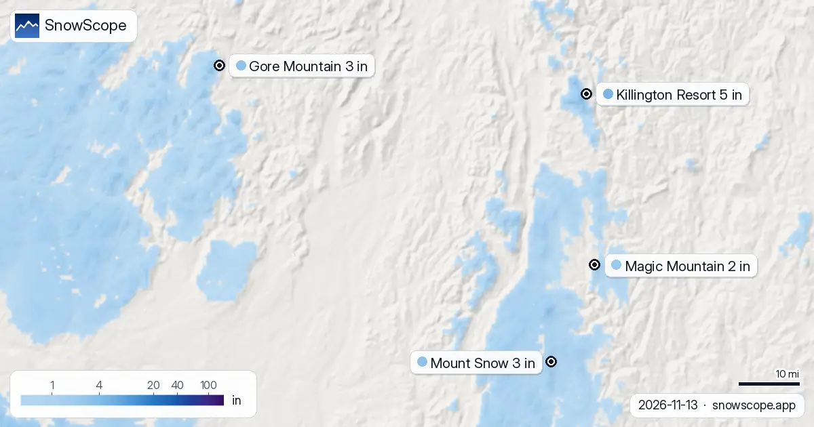

¿Buen comienzo de invierno en el noreste de EE. UU.? 4 de 4 estaciones por encima de lo normal (13 de noviembre)
¿Es un buen comienzo de invierno en el noreste de EE. UU.? La nieve de hoy en 4 estaciones en el noreste de EE. UU., frente a la misma fecha de cada uno de los 46 inviernos pasados, muestra cómo se forma la reserva de agua de la temporada. En 4 de ellas, la nieve está claramente por encima de lo normal. La nieve en la montaña es agua guardada para la primavera: lo que cae ahora alimenta después ríos y embalses.
Consulta la previsión de nieve en tiempo real de Killington Resort en la app SnowScopeEspesor de nieve, alertas de nieve polvo y mapa 3D, gratis.
La reserva de nieve frente a los inviernos pasados
A 2651 ft (808 m) en Killington Resort, los 3 in (8 cm) de hoy superan lo que dio esta fecha en 42 de los 46 inviernos pasados (lo habitual: 0 in (1 cm)): ya hay una buena cantidad de agua almacenada en la nieve.
Gore Mountain empieza bien a llenar su reserva de nieve: 2 in (4 cm) a 2316 ft (706 m), más que en esta fecha en 38 de los 46 inviernos pasados (lo habitual: 0 in (1 cm)).
A 2762 ft (842 m) en Mount Snow, los 3 in (8 cm) de hoy superan lo que dio esta fecha en 43 de los 46 inviernos pasados (lo habitual: 0 in (0 cm)): ya hay una buena cantidad de agua almacenada en la nieve.
Magic Mountain empieza bien a llenar su reserva de nieve: 1 in (2 cm) a 2113 ft (644 m), más que en esta fecha en 36 de los 46 inviernos pasados (lo habitual: 0 in (0 cm)).
| Estación | Espesor de nieve | Nieve nueva, 72 h | Previsto, próximos días | Cota máx. |
|---|---|---|---|---|
| Killington Resort | 5 in (12 cm) | 5 in (12 cm) | 1 in (2 cm) | 4140 ft (1262 m) |
| Gore Mountain | 3 in (8 cm) | 4 in (10 cm) | 1 in (2 cm) | 3583 ft (1092 m) |
| Mount Snow | 3 in (8 cm) | 5 in (12 cm) | 1 in (2 cm) | 3586 ft (1093 m) |
| Magic Mountain | 2 in (6 cm) | 4 in (9 cm) | 1 in (2 cm) | 2851 ft (869 m) |
La reserva de nieve de hoy
El manto más grueso del grupo está en Killington Resort, unos 5 in (12 cm) en las pistas altas; después Gore Mountain 3 in (8 cm) y Mount Snow 3 in (8 cm).
La nieve cubre ahora 5568 sq mi (14.420 km²) en el noreste de EE. UU.; 28 de 112 estaciones tienen algo en las pistas altas.
Nota sobre la medida: los valores de las estaciones de esquí son modelados para las pistas altas, los de las estaciones de medida se toman en un lugar en la fecha indicada, y todos tienen cierta incertidumbre.
Los próximos días en la previsión
Hasta el 16 de noviembre, la previsión añade 1 in (2 cm) en Killington Resort, 1 in (2 cm) en Gore Mountain y 1 in (2 cm) en Mount Snow; las cantidades a varios días aún pueden cambiar.
Las previsiones a varios días pueden cambiar: vuelve a mirar el mapa el día antes de viajar.
Consejos para esquiadores
- La sombra protege el manto. Las laderas norte en altura reciben menos sol, así que su nieve dura más que en la cara sur.
- Nieve en el mapa no significa que la estación esté abierta: consulta remontes y fechas de apertura en su web.
- La nieve de principio de temporada es fina. Quédate en pistas abiertas y pisadas: piedras y hierba están justo debajo.
- Activa una alerta de nieve polvo en la app SnowScope para saber cuándo Killington Resort recibe nieve nueva.
Sobre estas cifras
Los espesores de nieve de las estaciones son la nieve más profunda en las pistas altas según el modelo de nieve de SnowScope (unos 1 km, cálculo del 13 de noviembre); son estimaciones para una zona, no una medida en un punto. Los valores de las estaciones de medida son medidas en la fecha indicada. Las previsiones pueden cambiar. Consulta siempre el boletín oficial de aludes antes de salir fuera de pista.
Boletines oficiales de aludes: Mount Washington Avalanche Center
Citar este informe
Para investigación, docencia o prensa: cifras y gráficos reutilizables libremente bajo CC BY 4.0 con esta cita.
SnowScope (2026), ¿Buen comienzo de invierno en el noreste de EE. UU.? 4 de 4 estaciones por encima de lo normal (13 de noviembre), https://snowscope.app/blog/es/2026/11/us-northeast-snow-vs-past-winters-13-november-2026.html, consultado el 2026-11-13
SnowScope (Atlas Labs). (2026, November 13). ¿Buen comienzo de invierno en el noreste de EE. UU.? 4 de 4 estaciones por encima de lo normal (13 de noviembre). SnowScope snow reports. https://snowscope.app/blog/es/2026/11/us-northeast-snow-vs-past-winters-13-november-2026.html
BibTeX
@misc{snowscope2026usnortheastsnowvspastwin,
author = {{SnowScope (Atlas Labs)}},
title = {¿Buen comienzo de invierno en el noreste de EE. UU.? 4 de 4 estaciones por encima de lo normal (13 de noviembre)},
year = {2026},
month = nov,
howpublished = {\url{https://snowscope.app/blog/es/2026/11/us-northeast-snow-vs-past-winters-13-november-2026.html}},
note = {Published 2026-11-13 18:24 UTC; accessed 2026-11-13}
}· CC BY 4.0 · Métodos, datos y herramientas →
Killington Resort: nieve y temperatura según la altura, este invierno vs el pasado (herramientas) →
Sigue Killington Resort
Gratis: un aviso cuando llega la nieve y la previsión cada mañana.
Más partes de nieve

Mad River Glen, Vermont: nieve natural, unas 30 in (75 cm) de pico habitual a media montaña en 46 inviernos pasados, febrero el más nevado. Tres formas de planear el día.

¿Dónde nevará en el noreste de EE. UU. entre el 13 de noviembre y el 26 de noviembre, y cuánto? Preguntamos a los dos modelos globales que llegan a …

La superficie blanca ha cambiado: 676 sq mi (1750 km²) el 8 de noviembre, 42 sq mi (110 km²) hoy y 12.668 sq mi (32.810 km²) esperados el 13 de …